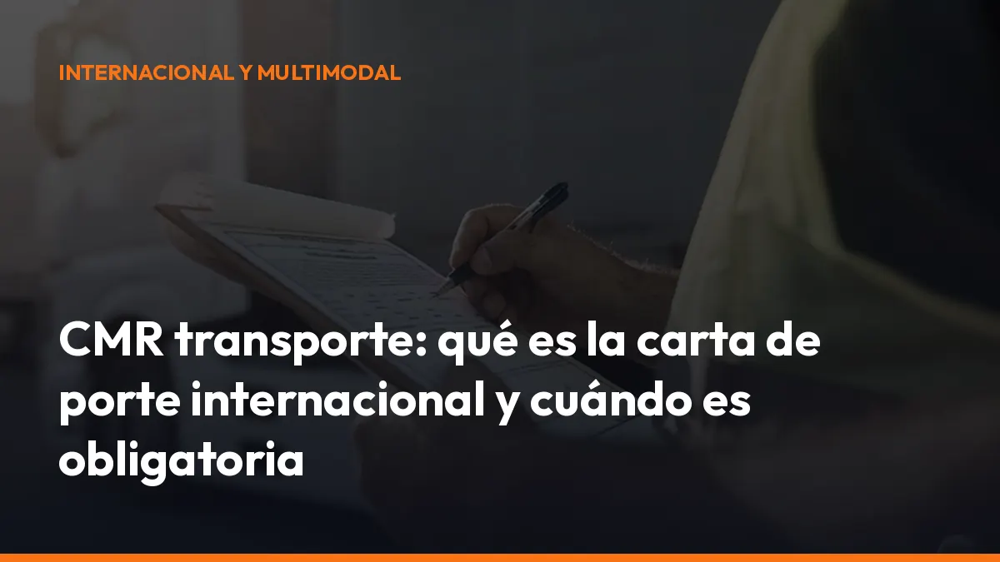

CMR transporte: qué es la carta de porte internacional y cuándo es obligatoria

El CMR acredita las condiciones del transporte, identifica a las partes y sirve como prueba ante una inspección, una entrega, una reclamación o un conflicto por daños, pérdidas o retrasos.
Además, ya puedes generar y gestionar tus documentos desde el móvil con Mi Carga. Rellena los datos, firma el porte y descarga el PDF en segundos.
¿Qué es el CMR en transporte?
El CMR es el Convenio relativo al contrato de transporte internacional de mercancías por carretera. También se utiliza este término para referirse a la carta de porte internacional que acompaña a la mercancía.
La carta de porte CMR documenta el acuerdo entre:
- Remitente: entrega la mercancía para su transporte.
- Transportista: recibe la carga y se compromete a trasladarla.
- Destinatario: recibe la mercancía en el lugar acordado.
Su función es sencilla: dejar constancia de qué se transporta, quién lo entrega, quién lo transporta, dónde se recoge y dónde se entrega.
El Convenio CMR de 1956 se aplica al transporte público de mercancías por carretera cuando el origen y el destino están en dos países diferentes, siempre que al menos uno de ellos forme parte del Convenio.
Consulta el texto del Convenio CMR publicado en el BOE para revisar su ámbito jurídico.
¿Cuándo es obligatoria la carta de porte CMR?
La carta de porte CMR corresponde al transporte internacional de mercancías por carretera sujeto al Convenio CMR.
Debes emitirla y llevarla cuando:
- Cruzas una frontera: el lugar de carga y el lugar previsto de entrega están en países distintos.
- Realizas transporte internacional por carretera: la operación se encuadra en el Convenio CMR.
- Necesitas acreditar el contrato: el documento demuestra las condiciones pactadas.
- Transportas mercancía por cuenta ajena: el porte debe reflejar la relación entre cargador, transportista y destinatario.
- Puedes pasar un control: la documentación debe estar disponible durante el servicio.
Desde el punto de vista jurídico, el contrato de transporte no desaparece por no existir una carta de porte. Sin embargo, en la práctica, viajar sin CMR te deja sin una prueba documental clara y puede provocar problemas durante una inspección, una entrega o una reclamación.
Por eso, la decisión correcta es directa: genera siempre la carta de porte CMR antes de iniciar un transporte internacional.
No confundas tampoco el CMR con otros documentos. Los transportes postales internacionales, las mudanzas y los transportes funerarios tienen un tratamiento específico y quedan fuera del ámbito ordinario del Convenio CMR.
¿Qué datos debe incluir una carta de porte CMR?
El artículo 6 del Convenio CMR establece la información principal que debe contener la carta de porte.
Antes de salir, comprueba estos datos:
Identificación del remitente
Incluye el nombre completo o razón social y la dirección del expedidor.
Identificación del transportista
Indica quién realiza el transporte y facilita sus datos completos. Si intervienen varios transportistas, debes reflejar correctamente la operación.
Identificación del destinatario
Escribe el nombre y la dirección de la persona o empresa que recibirá la mercancía.
Lugar y fecha de carga
Registra dónde y cuándo se recoge la mercancía. Esta información permite acreditar el inicio del servicio.
Lugar de entrega
Indica el destino previsto con la dirección más completa posible. Evita direcciones genéricas que puedan generar dudas.
Descripción de la mercancía
Detalla la naturaleza de la carga y su embalaje. Si se trata de mercancía peligrosa, debes incorporar también la información ADR correspondiente.
Número de bultos y marcas
Anota las unidades, referencias, marcas y códigos identificativos de la mercancía.
Peso bruto o cantidad
Incluye el peso total o la cantidad transportada según corresponda.
Gastos y condiciones del transporte
Registra el precio del transporte, los gastos adicionales y, cuando proceda, los derechos de aduana.
Instrucciones administrativas
Añade las indicaciones de aduana, seguros u otras formalidades necesarias para completar el servicio.
Reservas del transportista
Si observas daños visibles en la mercancía o en el embalaje, deja constancia de tus reservas. Firmar sin anotaciones puede complicar una reclamación posterior.
Genera cada documento con información completa y legible. Un dato incorrecto puede provocar llamadas, esperas en la entrega y discusiones sobre la responsabilidad.
¿Quién firma el CMR?
La firma confirma la intervención de cada parte en el transporte. Normalmente:
1. El remitente firma en la salida, al entregar la mercancía al transportista. 2. El transportista firma al recogerla, confirmando que la recibe. 3. El destinatario firma en la entrega, acreditando la recepción.
La firma del destinatario debe ir acompañada de la fecha y, si existe alguna incidencia, de las reservas correspondientes.
Si la mercancía llega dañada, incompleta o con retraso, no cierres el servicio sin registrar la incidencia en el documento. Detalla el problema y solicita la firma del destinatario.
Con un sistema digital, puedes recoger las firmas directamente desde el móvil y conservar una copia del documento. Mi Carga centraliza los documentos, las firmas y los portes, para que no tengas que buscar papeles en la cabina o en la oficina.
¿Para qué sirve la carta de porte CMR?
La carta de porte CMR no es solo un formulario. Es una prueba operativa y jurídica.
Prueba del contrato
Demuestra que existe un acuerdo de transporte entre el remitente y el transportista.
Control de la mercancía
Permite identificar qué carga se recogió, en qué cantidad y con qué embalaje.
Acreditación de la entrega
La firma del destinatario confirma que la mercancía llegó al lugar indicado.
Reparto de responsabilidades
Ayuda a determinar quién debía realizar cada actuación y en qué condiciones.
Gestión de reclamaciones
Si existe una pérdida, una avería o un retraso, el CMR aporta información para analizar lo ocurrido.
Respuesta ante una inspección
Durante un control, puedes mostrar el documento que acredita el servicio y sus principales condiciones.
La carta de porte no elimina todas las responsabilidades del transporte, pero sí evita que la operación quede sin una referencia documental clara.
CMR en papel o e-CMR: ¿qué cambia?
El e-CMR es la versión electrónica de la carta de porte CMR.
El Protocolo adicional de 2008 sobre la carta de porte electrónica, vigente en España, reconoce la equivalencia jurídica entre el documento electrónico y el documento en papel cuando se cumplen sus requisitos.
Con el e-CMR puedes:
- Crear el porte desde el móvil: sin imprimir formularios.
- Compartir la información al instante: con oficina, cargador y destinatario.
- Firmar digitalmente: directamente en la pantalla.
- Reducir errores: reutilizando datos guardados.
- Consultar el documento: en cualquier momento de la ruta.
- Guardar una copia: para reclamaciones o auditorías.
- Evitar pérdidas de papel: toda la información queda archivada.
El e-CMR debe mantener la integridad, disponibilidad y trazabilidad de los datos. También debe permitir que las partes y las autoridades accedan a la información cuando sea necesario.
El uso de la carta de porte electrónica requiere que las partes acepten este sistema y que el transporte se encuentre dentro del ámbito correspondiente.
CMR y DeCA: no son el mismo documento
Esta diferencia es fundamental para trabajar correctamente en España.
Documento Función principal
CMR o e-CMR Acredita el contrato de transporte internacional por carretera. Documento Función principal
DeCA Cumple la obligación española de control administrativo del transporte.
Carta de porte naDocumenta el contrato de transporte dentro de España. cional
El CMR se relaciona con el contrato internacional y con las responsabilidades de las partes. El DeCA responde a una obligación administrativa española.
Por tanto, en determinadas operaciones internacionales con origen, destino o tramo en España, pueden coexistir los dos documentos:
- CMR o e-CMR para acreditar el contrato internacional.
- DeCA para cumplir el control administrativo exigido en España.
No sustituyas automáticamente uno por otro. Revisa la documentación aplicable a tu operación y genera cada documento cuando corresponda.
A partir del 5 de octubre de 2026, el documento electrónico de control administrativo será obligatorio en los transportes afectados por la normativa española. La adaptación es sencilla si empiezas ahora.
Con Mi Carga puedes generar documentos de control y cartas de porte desde un mismo sistema, guardar los PDF y tenerlos disponibles durante la ruta.
Cómo generar un CMR sin complicaciones
Evita rellenar formularios cada vez desde cero. Sigue este proceso: 1. Crea tu cuenta en Mi Carga. 2. Introduce los datos del remitente, transportista y destinatario. 3. Añade la mercancía, el peso, los bultos y el recorrido. 4. Revisa las condiciones y las observaciones. 5. Firma el documento desde el móvil. 6. Descarga o comparte el PDF. 7. Conserva el documento para la entrega y el archivo posterior.
Tienes 10 transportes de prueba gratis, sin tarjeta y sin compromiso. Después, puedes continuar con documentos ilimitados por 10 € al mes más IVA o elegir el plan anual de 90 € más IVA.
Frente a las aplicaciones que cobran por cada porte, Mi Carga te permite generar tantos documentos como necesites.
Checklist antes de iniciar un transporte internacional
Antes de salir de la base o del almacén, confirma:
- Origen y destino: ¿están correctamente escritos?
- Partes implicadas: ¿los nombres y direcciones son completos?
- Mercancía: ¿la descripción coincide con la carga real?
- Bultos y peso: ¿las cantidades son correctas?
- Vehículo: ¿has registrado la matrícula cuando sea necesario?
- Documentos adicionales: ¿están incluidas las facturas, aduanas o certificados?
- ADR: ¿has añadido la información de mercancías peligrosas?
- Firmas: ¿han firmado las partes correspondientes?
- Copias: ¿puedes mostrar el documento durante el trayecto?
Haz esta comprobación antes de arrancar. Te llevará menos tiempo que resolver una incidencia en carretera.
Genera tu carta de porte CMR desde el móvil
El CMR transporte es una pieza básica de cualquier operación internacional por carretera. Identifica la mercancía, demuestra el contrato y ayuda a resolver responsabilidades.
No esperes a tener un problema para organizarlo.
Con Mi Carga puedes crear tu carta de porte CMR, generar el documento en PDF, recoger firmas y guardar cada servicio en la nube. Todo desde el móvil, en segundos y sin complicaciones.
10 portes gratis. Documentos ilimitados desde 10 €/mes + IVA. Crear tu cuenta gratuita o escribir a nuestro equipo por WhatsApp. ¿Hablamos?
Empieza ahora con tus 10 portes gratuitos.
DeCA, carta de porte y ADR, en PDF, con QR y archivo automático en la nube.
Empezar con 10 documentos gratisArtículo informativo. Consulta siempre el caso concreto de tu operación. ¿Dudas? Escríbenos.